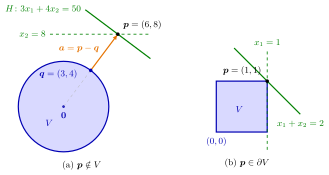

Separation of a Point and a Closed Convex Set¶
Proposition¶
Let be a nonempty closed convex set and .
(a) If , there is a separating hyperplane of and with and . One choice: let be the nearest point of to and ; then and
(b) If , there is a separating hyperplane of and with .
Interpretation¶
A point outside a closed convex set can be cut off from it by a hyperplane through the point that does not touch the set at all. A point on the boundary can still be cut off by a hyperplane through it, but that hyperplane may touch the set, at least in the point itself.

Panel (a) shows Example 1 below. The nearest point of the disc is , so , and passes through while on : a gap remains between and . The dashed line is a second hyperplane with the same property. Panel (b) shows Example 2 below: at the corner of every hyperplane through meets at least in ; the dashed line contains a whole edge, and touches only at .
For (a), take the point of closest to and the hyperplane through perpendicular to . If met this hyperplane, a point on the segment from towards it would be closer to than , and the intermediate value theorem rules out points of beyond it. For (b), approach by points , apply (a) to each, scale the normals to length one and pass to a convergent subsequence (Bolzano–Weierstrass). In the limit the strict inequality becomes weak, which is why may touch ; the hyperplane in (b) is a supporting hyperplane of .
Each hypothesis matters. Without closedness, (a) can fail for a point of the closure that is missing from (Example 3 below). Without convexity, even a compact set and a point outside it may have no separating hyperplane (Example 4 below). For (b), closedness is not needed: a convex set and a boundary point can always be separated (see the Key Results below).
The hyperplane is not unique (Example 1 below); the proposition only guarantees one. Applied to a finitely generated convex cone and a point outside it, the same nearest-point construction later proves Farkas' lemma.
Key Results¶
- Point outside: for nonempty closed convex and there is with for all , for instance with the nearest point. In particular a separating hyperplane through exists.
- Boundary point: for closed convex and there is with for all ; this hyperplane is also a supporting hyperplane.
- Together: for nonempty closed convex and every there is a separating hyperplane of and through .
- For a convex set that is not closed and the conclusion of (b) still holds: is closed and convex and , because the closure of a convex set is convex and has the same interior (see Interior and Closure of a Convex Set), so (b) applies to .
- Convexity cannot be dropped, not even for a compact set: the unit circle and its centre have no separating hyperplane (Example 4 below).
Examples¶
1. A point outside a disc. Let and , so . The nearest point is , so and . By the Cauchy-Schwarz inequality, for , so passes through and misses . It is not the only choice: also passes through , and on .
2. A corner of a square. Let and . For every with , on , so each such is as in (b). With the hyperplane contains a whole edge of ; with it meets only in . Since , no hyperplane through can miss , so the extra conclusion of (a) is impossible here.
3. Closedness matters in (a). Let , a convex set that is not closed, and . A separating hyperplane through has the form with on (or ). Since for every , this forces , so , which contains . No hyperplane through avoids . A separating hyperplane through does exist, as the fourth Key Result above predicts, because .
4. Convexity matters. Let , a compact set with , and . If on and , then , while gives , a contradiction. The other orientation fails at , which would give . So a compact set and a point outside its interior need not have a separating hyperplane; they always have one when is also convex, by the third Key Result above.
Prerequisites¶
- Separating Hyperplane
- Nearest Point of a Closed Convex Set
- Convex Set in
- Open and Closed Sets in a Metric Space
- Boundary of a Set
Related Concepts¶
- Supporting Hyperplane
- Separation of Disjoint Convex Sets
- Interior and Closure of a Convex Set
- Normal Cone
- Normal Cone of a Polyhedral Set
- Farkas' Lemma
Sources¶
- Math VI: Convexity and Optimization · Week 2
- H. E. Nusse and M. Dienstknecht, Math VI: Convexity and Optimization, lecture notes 2026–2027, Section 2.1
Aliases: separating a point from a convex set, point separation, strict separation of a point Keywords: \boldsymbol{a}=\boldsymbol{p}-\boldsymbol{q}, \boldsymbol{a}^{\top}\boldsymbol{x}<\boldsymbol{a}^{\top}\boldsymbol{p}\ \forall\boldsymbol{x}\in V, \boldsymbol{p}\in H,\ H\cap V=\varnothing, \boldsymbol{p}\in\partial V, hyperplane through the point, boundary point of a closed convex set Symbols: element of, for all, intersection, partial, real numbers, subset, union
Last updated: 5 November 2026 12:47
Separation of a Point and a Closed Convex SetFarkas' LemmaSeparation of Disjoint Convex SetsSeparating HyperplaneNearest Point of a Closed Convex SetConvex Set in R^nOpen and Closed Sets in a Metric SpaceBoundary of a SetSupporting HyperplaneInterior and Closure of a Convex SetNormal ConeNormal Cone of a Polyhedral Set